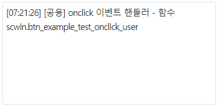

컴포넌트의 함수 'unbind'의 예제입니다. 함수 'unbind'는 컴포넌트에 등록된 이벤트 핸들러를 제거하는 기능을 제공합니다.
스크립트로 컴포넌트의 모든 이벤트의 모든 핸들러 해제하기
스크립트로 컴포넌트의 특정 이벤트의 모든 핸들러 해제하기
스크립트로 컴포넌트의 특정 이벤트의 특정 핸들러 해제하기
이 예제는 예제 화면의 영역 [로그 확인]의 textarea에 참고용 로그를 출력하고 있습니다.
그림 1.로그 출력 영역 참고 이미지

onclick 이벤트의 핸들러로 "scwin.btn_example_test_onclick_user"가 선언되어 있습니다. 이 핸들러는 스크립트로 onclick 이벤트 핸들러를 등록할 때 사용됩니다.
이 핸들러는 아래와 같은 문자열을 출력합니다.
[로그 예시]
[공용] onclick 이벤트 핸들러 - 함수 scwin.btn_example_test_onclick_user영역 [모든 이벤트의 모든 핸들러 제거하기]의 버튼 테스트 버튼 2에는 onclick 핸들러 1개, onmouseup 핸들러 1개가 등록되어있습니다.
onclick, onmouseup 이벤트가 발생합니다.
영역 [로그 확인]에 출력된 로그를 확인합니다.
[로그 예시]
[06:19:31] [테스트 버튼 2] - onmouseup 발생 - 함수 scwin.btn_exam_test2_onmouseup
[06:19:31] [테스트 버튼 2] - onclick 발생 - 함수 scwin.btn_exam_test2_onclick
-----------------------------------------------------------------
(출력된 로그를 삭제합니다.)
버튼 테스트 버튼 2의 모든 이벤트 핸들러가 제거됩니다.
영역 [로그 확인]에 출력된 로그를 확인합니다.
실행된 스크립트 예시가 출력됩니다.
[로그 예시]
[06:21:09] ** 함수 scwin.btn_ex2_onclick **
[06:21:09] btn_exam_test2.unbind();
-----------------------------------------------------------------
(출력된 로그를 삭제합니다.)
-
영역 [로그 확인]에 출력된 로그를 확인합니다.
출력된 로그가 없습니다.
영역 [특정 이벤트의 모든 핸들러 제거하기]의 버튼 테스트 버튼 3에는 onclick 핸들러 2개, onmouseup 핸들러 1개가 등록되어있습니다.
onclick, onmouseup 이벤트가 발생합니다.
영역 [로그 확인]에 출력된 로그를 확인합니다.
[로그 예시]
[06:29:53] [테스트 버튼 3] - onmouseup 발생 - 함수 scwin.btn_exam_test3_onmouseup
[06:29:53] [테스트 버튼 3] - onclick 발생 - 함수 scwin.btn_exam_test3_onclick
[06:29:53] [공용] onclick 이벤트 핸들러 - 함수 scwin.btn_example_test_onclick_user
[06:29:53] e.exampleParam : undefined
-----------------------------------------------------------------
(출력된 로그를 삭제합니다.)
버튼 테스트 버튼 3의 onclick 이벤트의 모든 핸들러가 제거됩니다.
영역 [로그 확인]에 출력된 로그를 확인합니다.
실행된 스크립트 예시가 출력됩니다.
[로그 예시]
[06:31:26] ** 함수 scwin.btn_ex3_onclick **
[06:31:26] btn_exam_test3.unbind("onclick");
-----------------------------------------------------------------
(출력된 로그를 삭제합니다.)
onmouseup 이벤트가 발생합니다.
영역 [로그 확인]에 출력된 로그를 확인합니다.
[로그 예시]
[06:32:32] [테스트 버튼 3] - onmouseup 발생 - 함수 scwin.btn_exam_test3_onmouseup
영역 [특정 이벤트의 특정 핸들러 제거하기]의 버튼 테스트 버튼 4에는 onclick 핸들러 2개가 등록되어있습니다.
onclick 이벤트가 발생합니다.
영역 [로그 확인]에 출력된 로그를 확인합니다.
[로그 예시]
[06:36:47] [테스트 버튼 4] - onclick 발생 - 함수 scwin.btn_exam_test4_onclick
[06:36:47] [공용] onclick 이벤트 핸들러 - 함수 scwin.btn_example_test_onclick_user
[06:36:47] e.exampleParam : undefined
-----------------------------------------------------------------
(출력된 로그를 삭제합니다.)
버튼 테스트 버튼 4의 onclick 이벤트의 핸들러 [scwin.btn_example_test_onclick_user]가 제거됩니다.
영역 [로그 확인]에 출력된 로그를 확인합니다.
실행된 스크립트 예시가 출력됩니다.
[로그 예시]
[06:40:26] ** 함수 scwin.btn_ex4_onclick **
[06:40:26] btn_exam_test4.unbind("onclick", scwin.btn_example_test_onclick_user);
-----------------------------------------------------------------
(출력된 로그를 삭제합니다.)
onclick 이벤트가 발생합니다.
영역 [로그 확인]에 출력된 로그를 확인합니다.
[로그 예시]
[06:41:20] [테스트 버튼 4] - onclick 발생 - 함수 scwin.btn_exam_test4_onclick
유형1. 컴포넌트의 모든 이벤트의 모든 핸들러 해제하기
//id가 btn_example_test인 컴포넌트의 예시입니다. //컴포넌트의 모든 이벤트의 모든 핸들러를 해제 btn_example_test.unbind();
유형2. 컴포넌트의 특정 이벤트의 모든 핸들러 해제하기
//id가 btn_example_test인 컴포넌트의 예시입니다. //컴포넌트의 onclick 이벤트 핸들러 모두 해제. btn_example_test.unbind("onclick");
유형3. 컴포넌트의 특정 이벤트의 특정 핸들러 해제하기
//id가 btn_example_test인 컴포넌트의 예시입니다. //컴포넌트의 onclick 이벤트의 'scwin.btn_example_test_onclick_user' 핸들러 해제 btn_example_test.unbind("onclick", scwin.btn_example_test_onclick_user);
unbind( type , function )